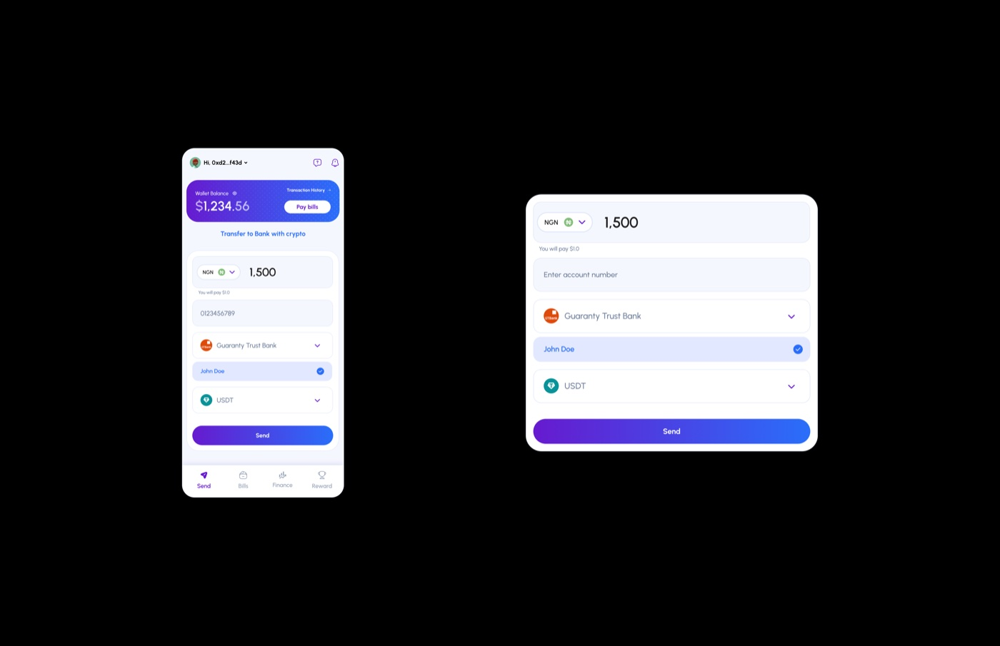
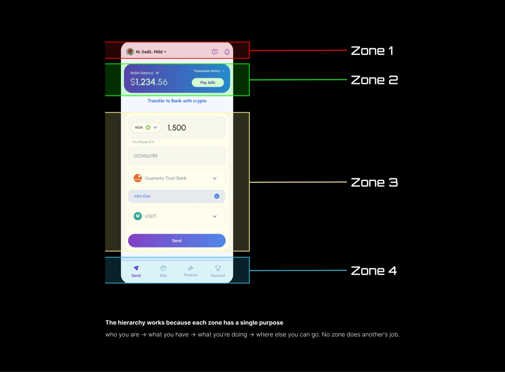
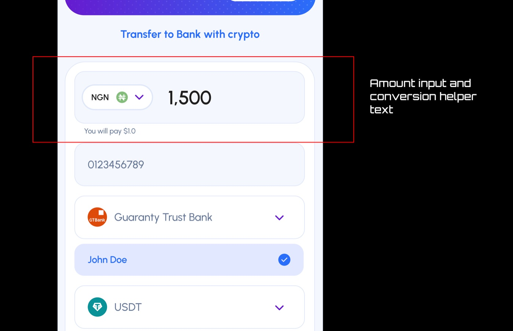
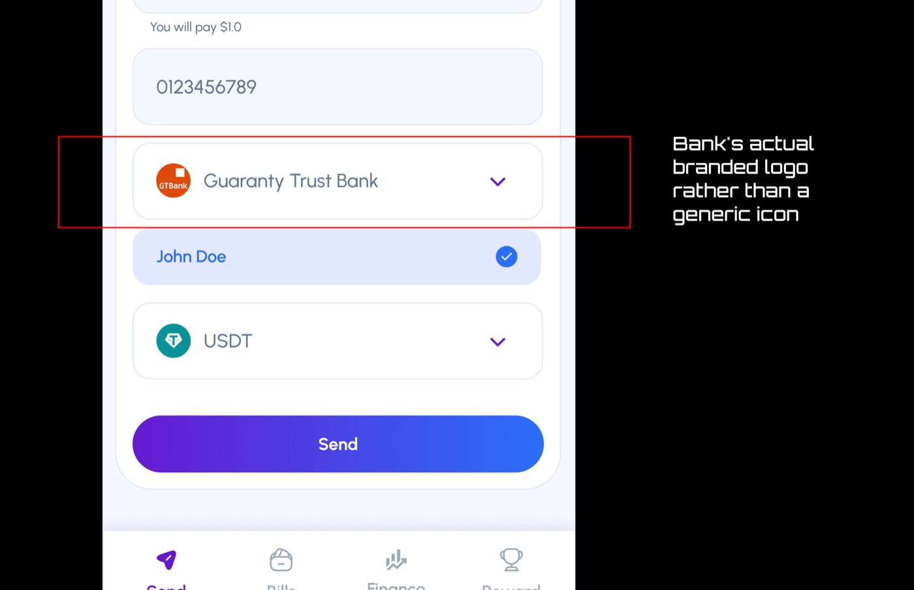
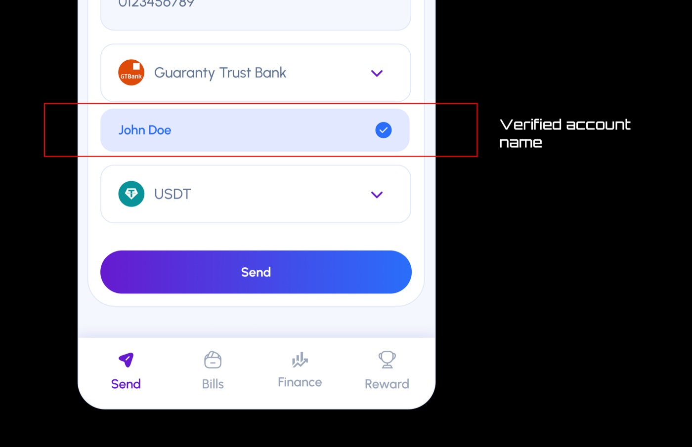
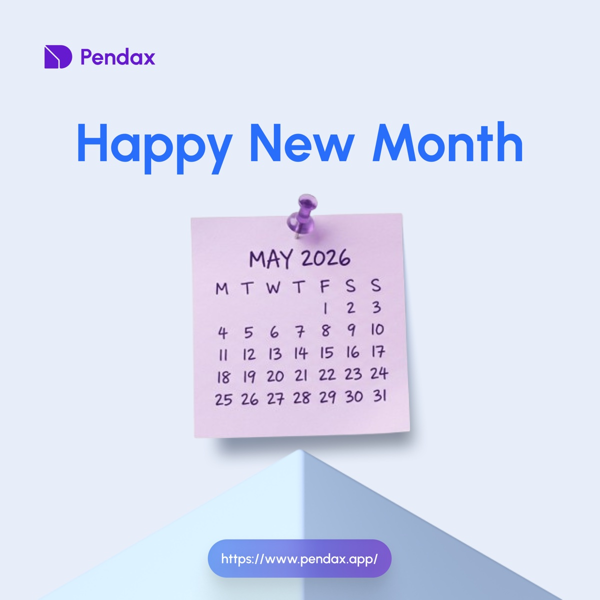
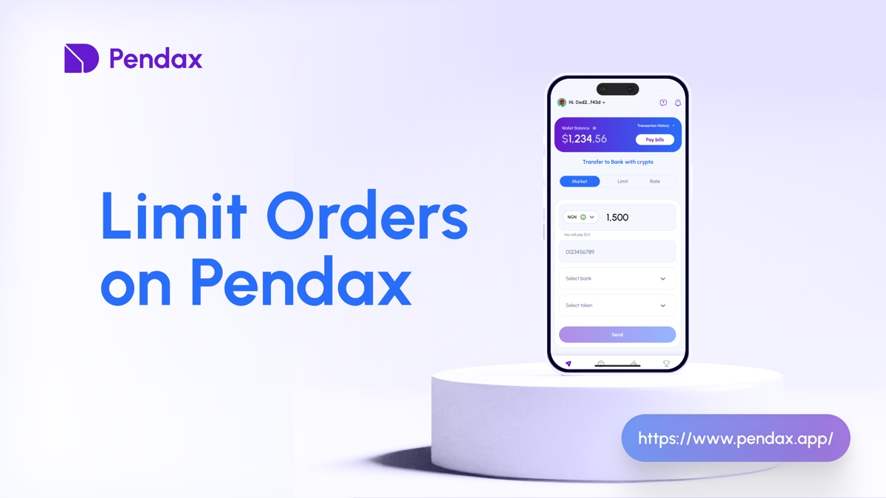
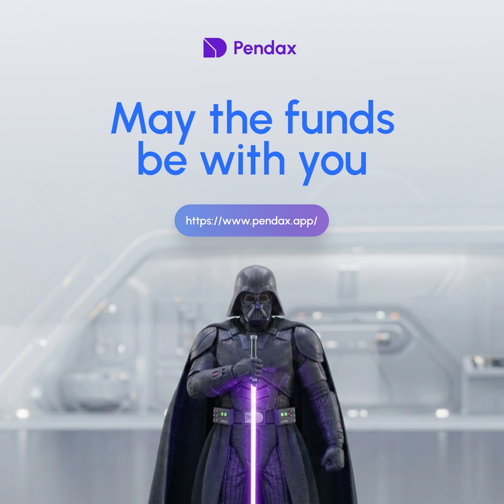
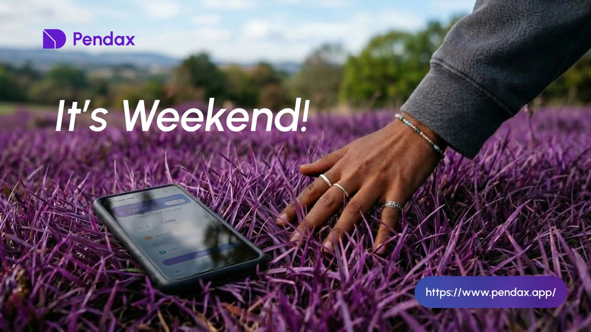
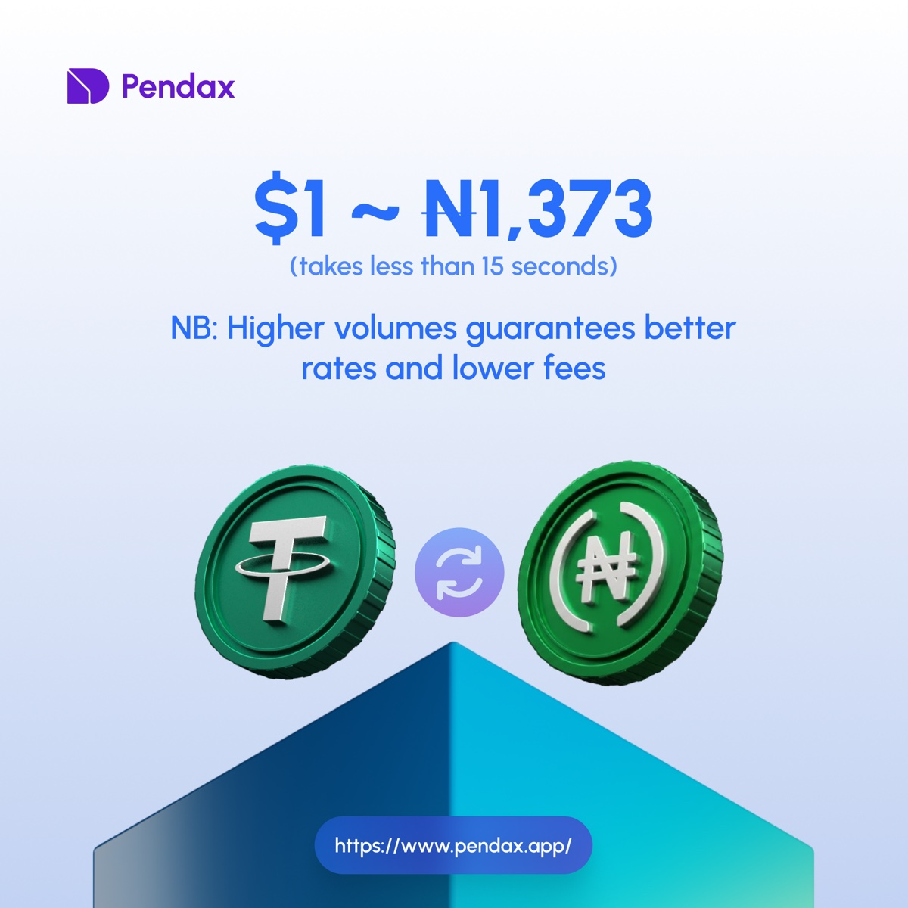

Bridging Crypto & Banking:
Designing Trust Into a Crypto-to-NGN Transfer Flow
This case study examines the UI/UX of a mobile-first fintech app with a desktop view that allows users to transfer value from a connected Web3 wallet directly into a Nigerian bank account, denominated in naira (NGN) and settled in USDT.
01 — Overview
The product sits at the intersection of decentralised finance and traditional Nigerian banking infrastructure. The design challenge is not just functional, but psychological: the interface must make an unfamiliar action feel as safe and routine as sending money through a regular banking app.

02 — User Context & Problem Space
Who Is This Designed For?
The primary user is a Nigerian smartphone owner who already holds crypto, likely USDT, and needs to move that value into a naira bank account for bills, purchases, or transfers. They are mobile-first and are likely familiar with bank apps and P2P platforms such as Binance P2P or LocalBitcoins.
The product is designed primarily for mobile use, but it also needs to translate cleanly to desktop for users who prefer a larger screen or manage funds from a laptop.
The User's Pain Points Before This Product
| Pain Point | How It Showed Up In Behaviour |
|---|---|
| Fear of sending to the wrong account | Double-checking P2P counterparty details, screenshot exchanges, disputes |
| Rate uncertainty | Abandoning transactions mid-flow when rates seemed unfavourable |
| Multi-platform friction | Switching between 3–4 apps to complete one transfer |
| Trust deficit in crypto-native UIs | Preferring familiar bank apps even when slower or more expensive |
| Volatility anxiety | Timing transfers to avoid price drops during settlement |
03 — Visual Hierarchy & Layout
The layout follows a clear visual hierarchy that guides the user from context to decision to action. It breaks into four distinct zones.

Zone 1 anchors identity and trust, Zone 2 frames the wallet balance, Zone 3 contains the transfer inputs, and Zone 4 keeps secondary navigation out of the way.
04 — Component-Level UX Analysis
NGN Amount Input with Live USD Conversion
The large amount field is paired with subdued helper text showing the crypto cost in real time. It answers the user's most anxious question directly beneath the input, eliminating the mental maths that can trigger abandonment.

Bank Selector with GTBank Logo
Displaying the bank's actual branded logo rather than a generic icon is a deliberate trust design decision. It bridges the familiar world of Nigerian banking with the unfamiliar world of crypto-funded transfer.

Auto-Resolved Account Name with Checkmark
The verified account name is arguably the most psychologically important element on the screen. It neutralises the fear of sending to the wrong account by showing that the system checked on the user's behalf.

05 — Trust Design
Trust is built cumulatively through small, consistent decisions rather than one headline feature.
Institutional Familiarity
Bank logos, the account name lookup, and the NGN denomination anchor the new action to familiar Nigerian banking infrastructure.
Radical Transparency
Balance, exchange rate, recipient name, and token selection are surfaced proactively so the user never has to take anything on faith.
System Verification
The auto-resolved account name with a checkmark mirrors confirmation patterns users already know from mobile banking and payment apps.
Visual Consistency
A coherent colour language and clean layout project competence and stability, which users often read as reliability.
Stablecoin Default
Defaulting to USDT removes the final trust barrier by removing price unpredictability from the first decision.
06 — Brand & Visuals
Pendax also includes a visual identity system and social-ready campaign art. These pieces support the product by keeping the brand recognizable across different moments: launches, promos, rate pushes, and playful seasonal posts.





07 — Conclusion
The crypto-to-NGN bank transfer screen demonstrates a sophisticated understanding of its users' psychology. It does not try to educate users about blockchain; instead, it wraps crypto rails in a banking-native experience without pretending they are the same thing.
The result is an interface that feels safe, legible, and efficient. Each component earns its place by answering a specific user anxiety, and the cumulative effect is a transaction flow where pressing Send does not feel like a leap of faith. It feels like the obvious next step.